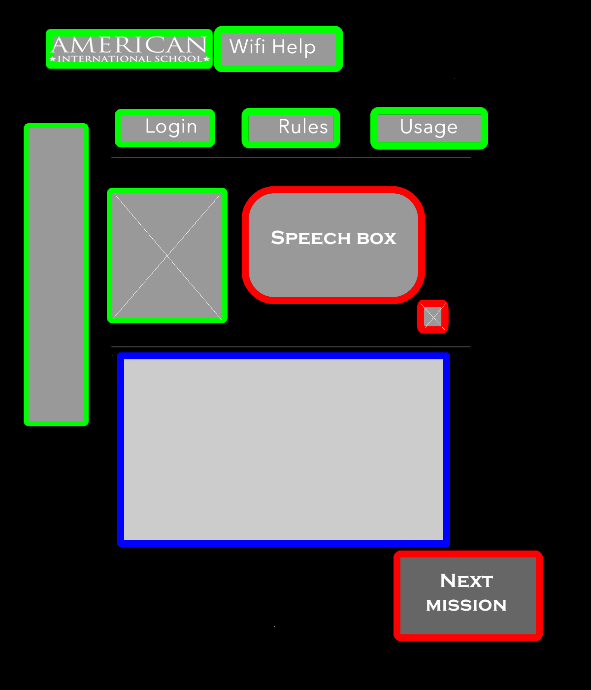

We need to grab the attention of middle school students with a theme that stands out and is consistent throughout the subpages.

1. Everything is laid out on a page - all details and procedures are displayed; users scroll down to each section of the subpage and there is a "back to top" botton
2. Dialogues spoken by heroes convey the message in a tone more directed to the middle school students; only text inside the speech box changes when the "next" button is pressed Both have the button "next mission" to go to the next subpage